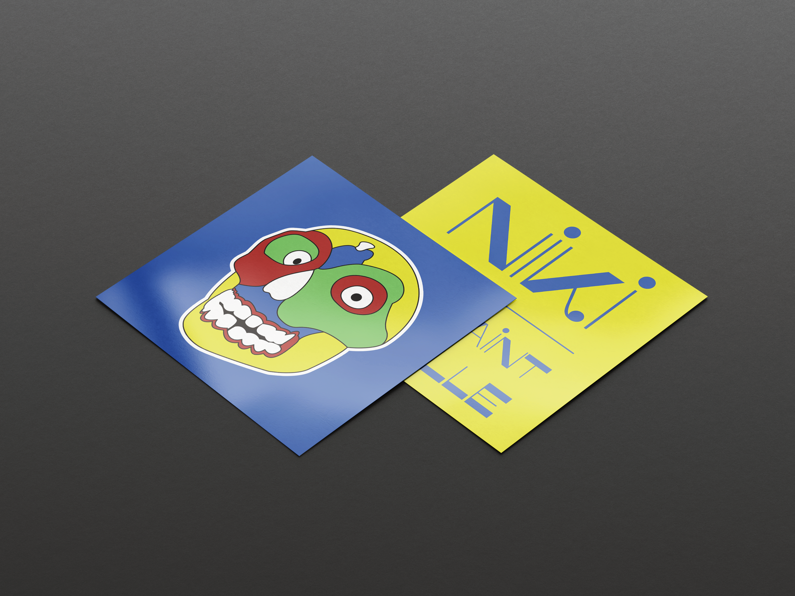

Carton d'invitation
Mise en situation du carton d'invitation dans son univers graphique.
Portfolio
Projet scolaire
Création d'un carton d'invitation et développement d'un univers graphique inspiré du travail artistique de Niki de Saint Phalle, en travaillant la composition, les formes et la mise en couleur.
